<!DOCTYPE html>
<html>
<head>
	<title>班级主页-环三</title>
	<style>
		.loading{width:100%;height:100%;position:fixed;top:0;left:0;z-index:100;
			background:#fff;}
		.loading .pic{width:350px; height:200px;background:url(loading.gif);
		position:absolute;top:0;bottom:0;left:0;right:0;
		margin:auto}
	</style>
	<meta charset="utf-8">
	<meta name="viewport" content="width=device-width, initial-scale=1">
	<meta http-equiv="X-UA-Compatible" content="IE=edge">
	<link href='https://fonts.googleapis.com/css?family=Open+Sans:300,400,600,700' rel='stylesheet' type='text/css'>
	<link rel="stylesheet" href="css/bootstrap.min.css">
	<link rel="stylesheet" href="css/style.css">
	 <script src="//api.html5media.info/1.1.8/html5media.min.js"></script>
	<script src="js/jquery-1.11.2.min.js"></script>
	<script>
		$(function(){
			var loading='<div class="loading">
		<div class="pic"></div>
	</div>';
			$("body").append(loading);
			setInterval(function(){
				$(".loading").fadeOut();
			},3.000)
		})
</head>
<body>
	<div class="loading">
		<div class="pic"></div>
	</div>
	<nav class="navbar navbar-inverse navbar-fixed-top">
		<div class="container">
			<div class="navbar-header">
				<button type="button" class="navbar-toggle">
					<span class="icon-bar"></span>
					<span class="icon-bar"></span>
					<span class="icon-bar"></span>                        
				</button>
			</div>   
			<div class="single-page-nav sticky-wrapper" id="tmNavbar">
				<ul class="nav navbar-nav">
					<li><a href="#section1">班级主页</a></li>
					<li><a href="#section2">班级寄语</a></li>
					<li><a href="#section3">活动</a></li>
					<li><a href="#section4">照片墙</a></li>
					<li><a href="#section5">视频集</a></li>
				</ul>
			</div>   
		</div>
	</nav>    

	<div id="section1">
		<header id="header-area" class="intro-section">
			<div class="container">
				<div class="row">
					<div class="col-sm-12 text-center">
						<div class="header-content">
							<h1>环宇之内，三生三世</h1>
							<h4>CUMT-环测学院-环境16-3班</h4>
						</div>
					</div>
				</div>
			</div>
		</header>
	</div>
	<div id="section2">
		<!-- Start Feature Area -->
		<section id="feature-area" class="about-section">
			<div class="container">
				<div class="row text-center inner">
					<div class="col-sm-4">
						<div class="feature-content">
							
							<h2 class="feature-content-title green-text">一：</h2>
							<p class="feature-content-description">尊重生命，感悟自然，明辨是非，注意细节，享受成长快乐；学会审美，学会宽容，学会感恩，学会思考，领悟完美人生。
							</p>
							<a href="#" class="feature-content-link green-btn">button green</a>
						</div>
					</div>
					<div class="col-sm-4">
						<div class="feature-content">
							
							<h2 class="feature-content-title blue-text">二：</h2>
							<p class="feature-content-description">惟此独立之精神,自由之思想,历千万祀,与天壤而同久,共三光而永光。</p>                    
							<a href="#" class="feature-content-link blue-btn">See Details</a>
						</div>
					</div>
					<div class="col-sm-4">
						<div class="feature-content">
							
							<h2 class="feature-content-title red-text">三：</h2>
							<p class="feature-content-description">所谓大师，就是失败最多的劳动者，就是打工最多的劳动者。一日的劳动可以获得安眠的夜；一生的劳动可以获得安宁的死。
							</p>
							<a href="#" class="feature-content-link red-btn">Button Red</a>
						</div>
					</div>
				</div></div>
			
		</section>
		<!-- End Feature Area -->

		
			</div>
			<div id="section3">
				<!-- Start Services Area -->
				<section id="services-area" class="services-section">
					<div class="container">
						<div class="row">
							<div class="col-sm-12 text-center inner our-service">
								<div class="service">
									<h1>班级活动</h1>
									<p>这里是我们环境三班的展示墙，展示班级活动与原创美文。.</p>
									</div>
								</div>
							</div>
						</div>
					</section>
					<!-- End Services Area -->

					<!-- Start Blog Area -->
		<section id="blog-area">
			<div class="container">
				<div class="row text-center inner">
				<div class="col-sm-6">
						<div class="blog-content">
							
							
						<video src="movie/531.mp4" controls preload="metadata" controls width="100%" height="100%"></video>
						<h2>2017.5.31不忘初心跟党走</h2>
<p>南湖的小船 
荡着新思潮的涟漪
<br>载着中国驶进新航线
镰刀和铁锤<br>
把七月的天空
镶嵌成一面旗帜<br>
漫卷的红旗
驱散旧社会的黑暗
迎来新世界的曙光<br>
“七一”是一粒种子
播进中国的土地
长成为一个节日<br>
中国的七月
点燃红色的圣火<br>
敲响嘹亮的晨钟
展开腾飞的翅膀<br>
我们是七月的孩子
永远记得自己的生日<br>
我们的七月
踏上拼搏的路<br>
高擎奋进的大旗
唱响奉献的组歌<br>
我们是党旗上一缕红色
永远知道为谁飘扬<br>
用旗帜上的铁锤
和八千万份忠诚共同打造<br>
打造我们的铮铮风骨和钢铁意志<br>
用旗帜上的镰刀
和96年的历程<br>
我们
	收获国家强大和人民富裕</p>

							</div>

							
						</div>
					<div class="col-sm-6">
						<div class="blog-content">
							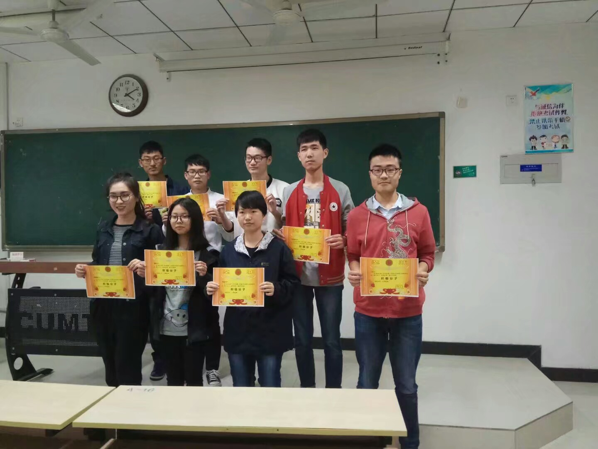
							<h2>2017.5.9班会记录</h2>
							<p>
班会进行第一项，心委为对待班级事宜积极者颁发奖状奖品<br>班会进行第二项，各班委总结<br>班会进行第三项，高数考试不理想同学总结发现自己的问题。<br>班会进行第四项，班主任讲话<br>这次班会主要谈到了一下几个内容:<br>
1.手机收纳袋，以后如有空缺即视为缺勤
2.集体自习 还需认真对待，经班委及班主任讨论决定周日的集体自习用来交流讨论不会的问题，具体内容见学委安排，其余时间照常。
3.宿舍风气  讨论决定安排每个小寝一个负责人，督促大家更好的学习、作息
4.作业抄袭  主要存在于男生方面，许多科目弄懂作业，及格不成问题，请大家务必重视作业。
5.生日贺卡  希望无论哪一位同学大家都要用心，为他留下美好的回忆
6.班级志愿活动  课程少时将会组织 我们会负责的~
7.公众号运营分工  宣委会在近期出一个分组，希望大家积极投稿。
8.学习积极性(划重点)，确定自己的目标，班级互相帮助 ，对自己负责
<br>班主任提议之<br>
1.在家用网络课程学习
2.临近考试的时候 一定要努力的去学，尽早做准备
3.该玩玩该学学(课堂)
4.把目标定高一点
5.社团  与 学习
6.自我管理能力
<br>
学委说:<br>
有挂科者没有保研资格，不得参与本学年评优
不及格学分20-35降级，35以上劝退
而且下半年各科目易挂科

</p>
								<br>

							</div>
						</div>
					
			<div class="col-sm-6">
							<div class="blog-content">
								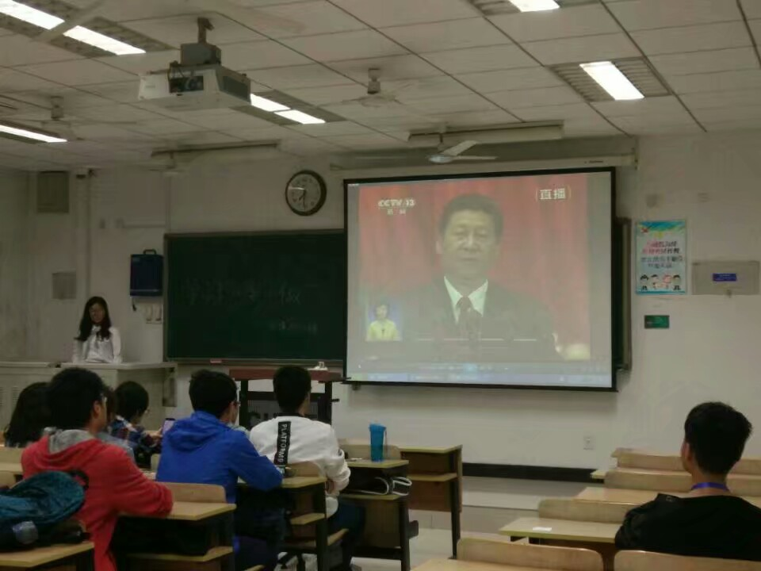
								<h2>2017.4.25“一学一做”团日活动</h2>
								<p>4.25日晚七点十五分，环境16-3团支部于博五B405组织开展了“一学一做”主题教育团日活动。<br>
活动开始时各位团员都佩戴好团徽，全体起立，由团支书高新宇领誓，重温入团时的誓言。宣誓完毕后，又齐唱团歌《光荣啊！中国共青团》。<br>活动进行第二项，团支书从是什么、为什么、怎么做三个大方面讲解了“一学一做”，讲解完毕后，观看了习近平总书记的讲话，里面谈到“青少年要志存高远、增长知识、锤炼意志，让青春在时代进步中焕发出绚丽的光彩。”<br>活动进行第三项，各位同学按照抽签的组号分为了四个小组开始讨论“如何做一名合格的共青团员”，讨论完毕后团支书随机叫号请同学们发表自己的看法，谈了谈自己身为一名共青团员的优点与不足。活动进行第四项，为徐州市创建全国文明城市助力，团支书带领大家学习了“创建全国文明城市应知应会十问”。
 
</p>
									<p id="blofr"></p>
								</div>
							</div>
					
					<div class="col-sm-6">
						<div class="blog-content">
							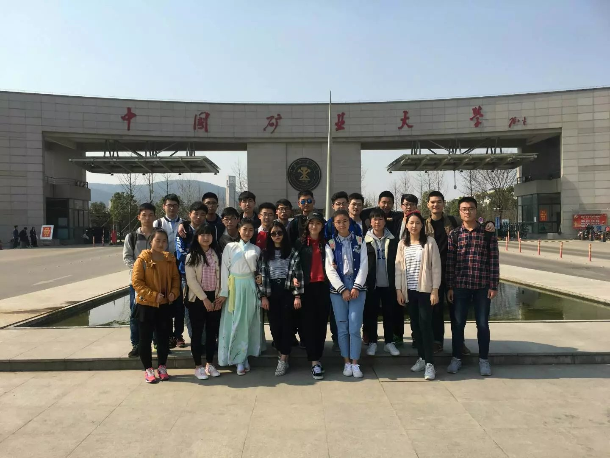
								<h2>2017.3.18 班级春游踏青</h2>
								<p>【撷一抹绿色流转指尖】<br> 和风，暖阳，踏着风儿驻足，原来你也在这里，清幽的涟漪水暖季节的尘烟。春花灿漫了一泓湖水，期待莲香捻心的沉醉。<br> 3.18日，正值花朝节，我们环三宝贝们集体出游，步行至泉山森林公园，开始了我们班级的第一次春游。我们上山，去竹林深处寻猴子，去贴近自然；我们围坐，玩着“干瞪眼”，在和煦春风下放飞自我，笑的真切。 <br>被课业压着？心很累？别忘了这是春天，习惯了城市的喧嚣，不如去自然深处感受静谧。
</p>
									
								
								</div>
							</div>
						
					
				</section>
				<!-- End Blog Area -->
				<div id="section4">
		<!-- Start Feature Area -->
					<section id="services-area" class="services-section">
					<div class="container">
						<div class="row">
							<div class="col-sm-12 text-center inner our-service">
								<div class="service">
									<h1>照片墙</h1>
									<p>这里是我们环境三班的成员照片墙.</p>
									</div>
								</div></div>
							</div>
						</div>
					</section>
		<section id="feature-area" class="about-section">
			<div class="container">
				<div class="row text-center inner">
					<div class="col-sm-4">
						<div class="feature-content">
				<!-- Start Testimornial Area -->
					<section id="testimornial-area">
						<div class="container">
							<div class="row text-center">
								
								

							<div class="row">
								<div class="col-lg-12">
									<div class="tm-box">
							<div class="col-sm-4">
						
							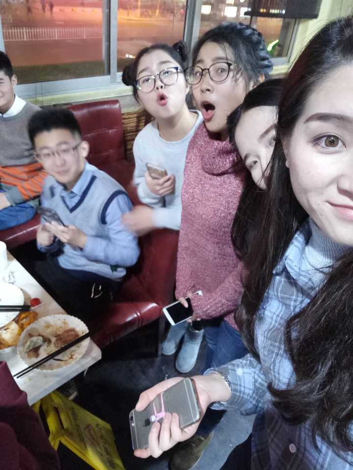</div>
				
										<div class="col-sm-4">
											
						<div class="feature-content">
							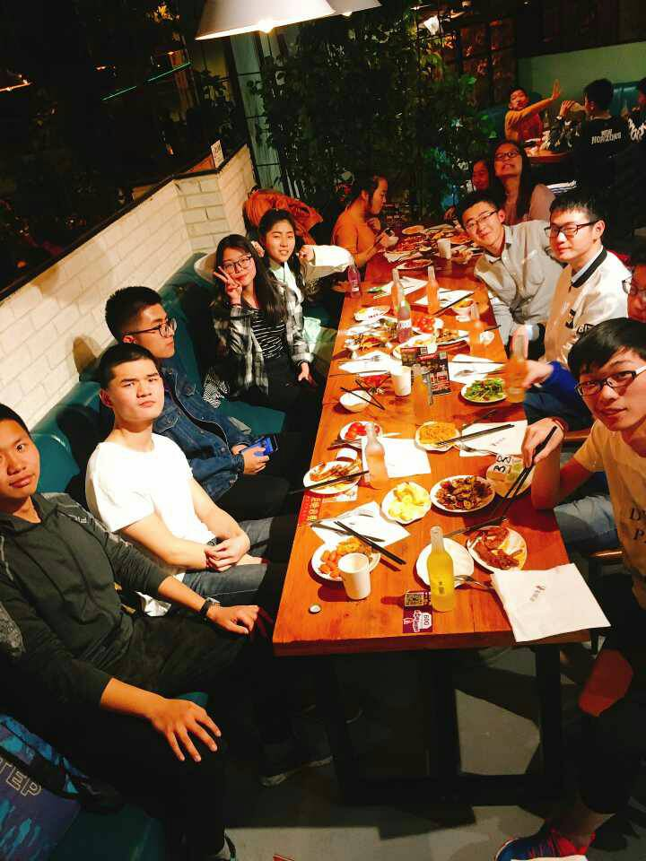</div></div>
					
							<div class="col-sm-4">
								
						<div class="feature-content">
							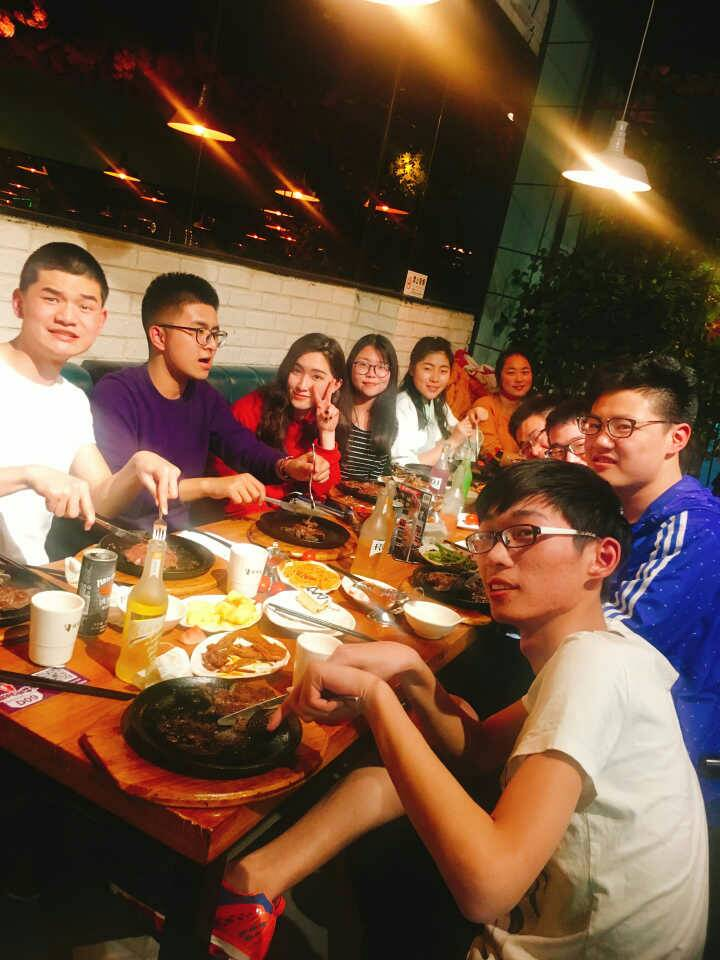</div>
					</div><div class="col-sm-4">
						<div class="feature-content">
							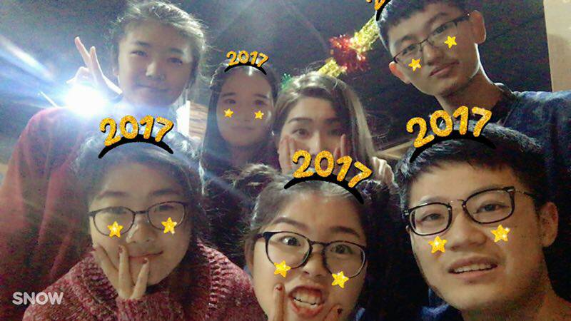</div>
					</div><div class="col-sm-4">
						<div class="feature-content">
							</div></div>
					<div class="col-sm-4">
						<div class="feature-content">
							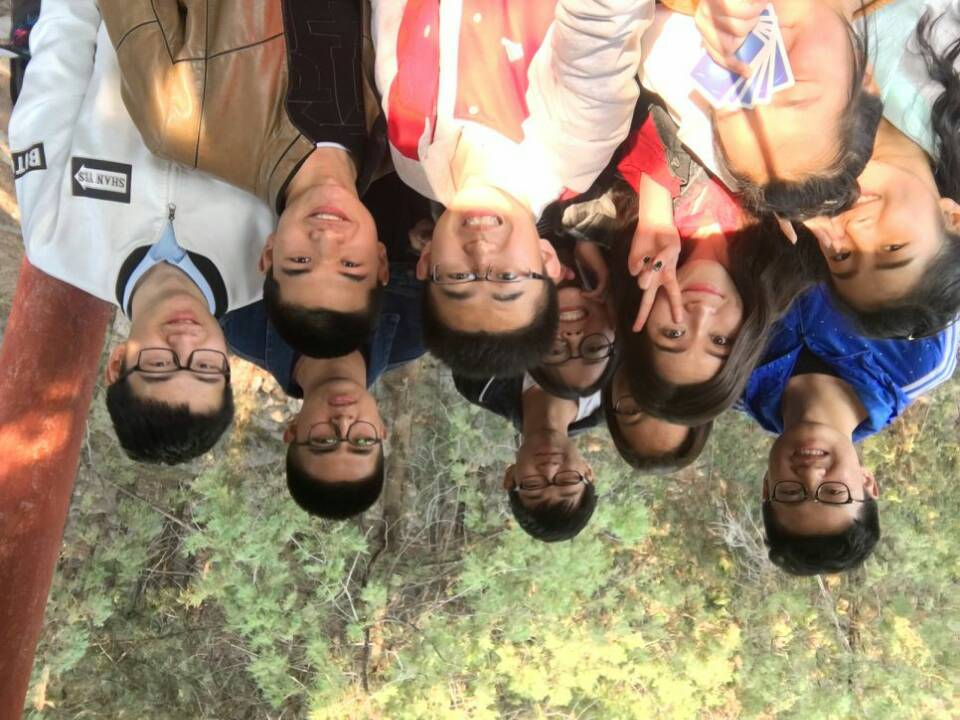</div></div>
					<div class="col-sm-4">
						<div class="feature-content">
							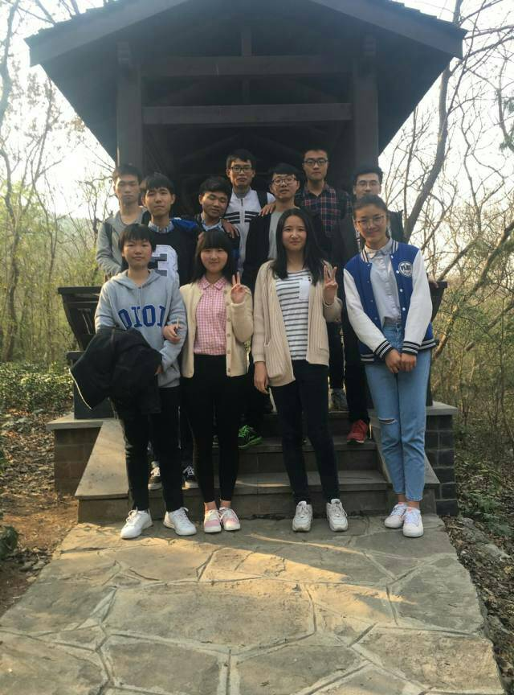</div>
					</div><div class="col-sm-4">
						<div class="feature-content">
							</div>
					</div><div class="col-sm-4">
						<div class="feature-content">
							</div>
					</div><div class="col-sm-4">
						<div class="feature-content">
							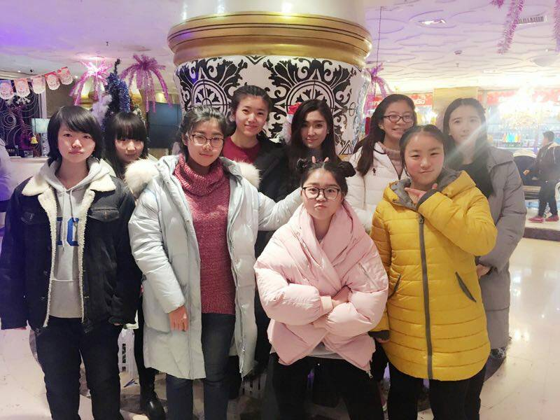</div>
							</div><div class="col-sm-4">
						<div class="feature-content">
							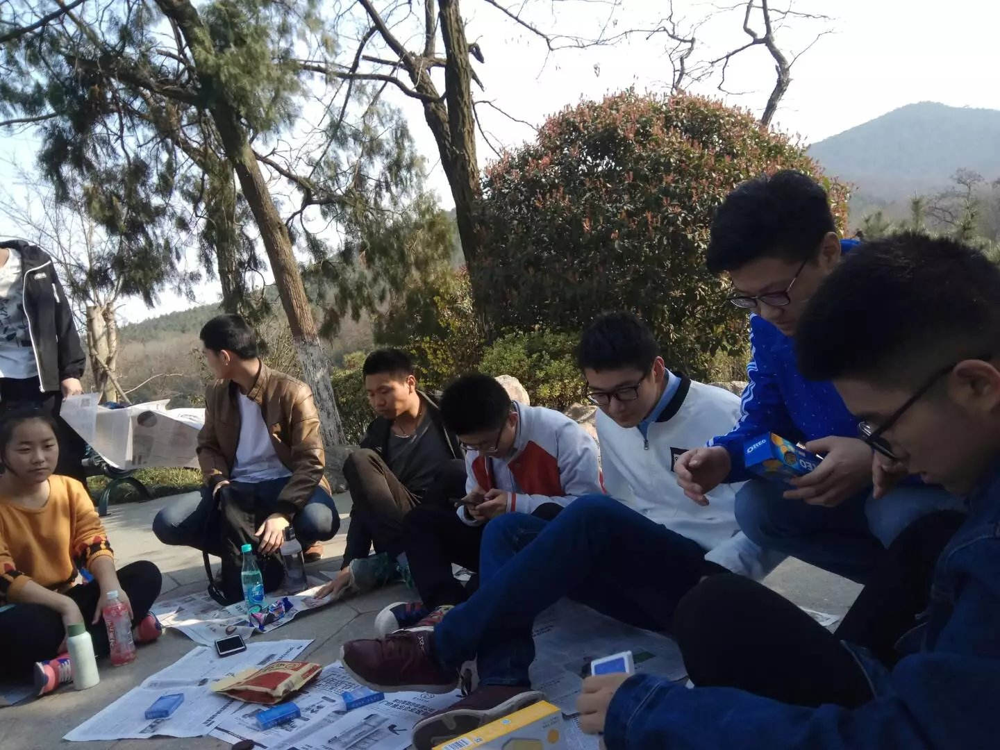</div>
					</div><div class="col-sm-4">
						<div class="feature-content">
							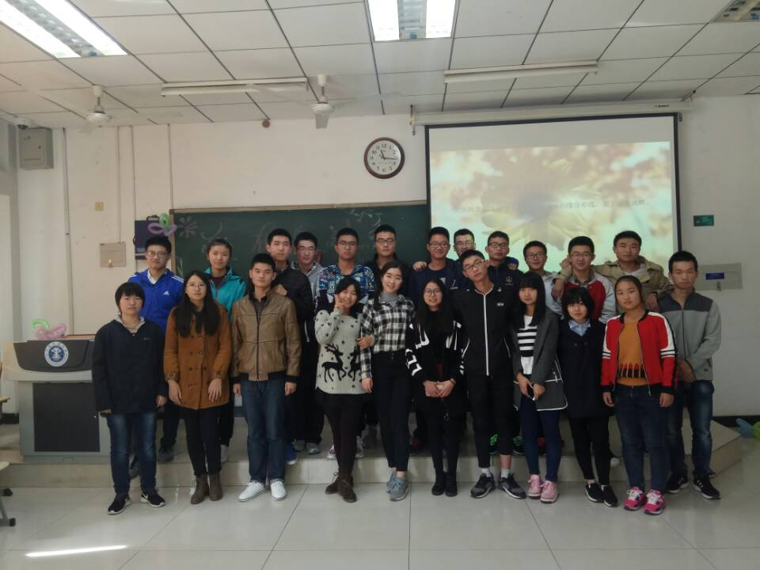</div>
					</div><div class="col-sm-4">
						<div class="feature-content">
							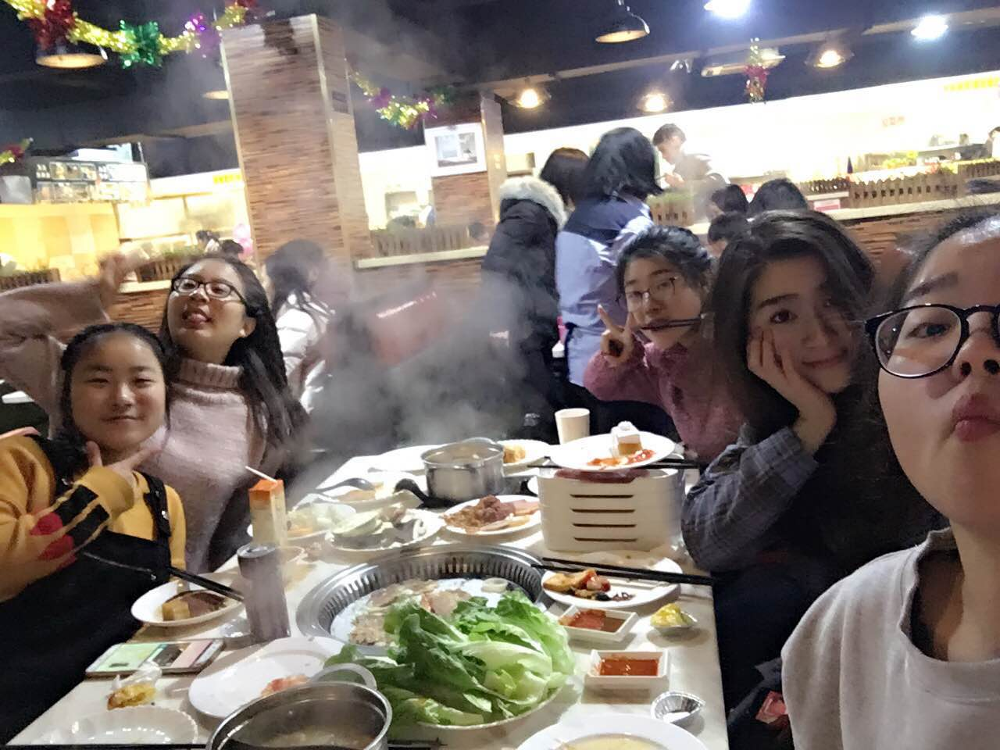</div>
					</div><div class="col-sm-4">
						<div class="feature-content">
							</div>
					</div><div class="col-sm-4">
						<div class="feature-content">
							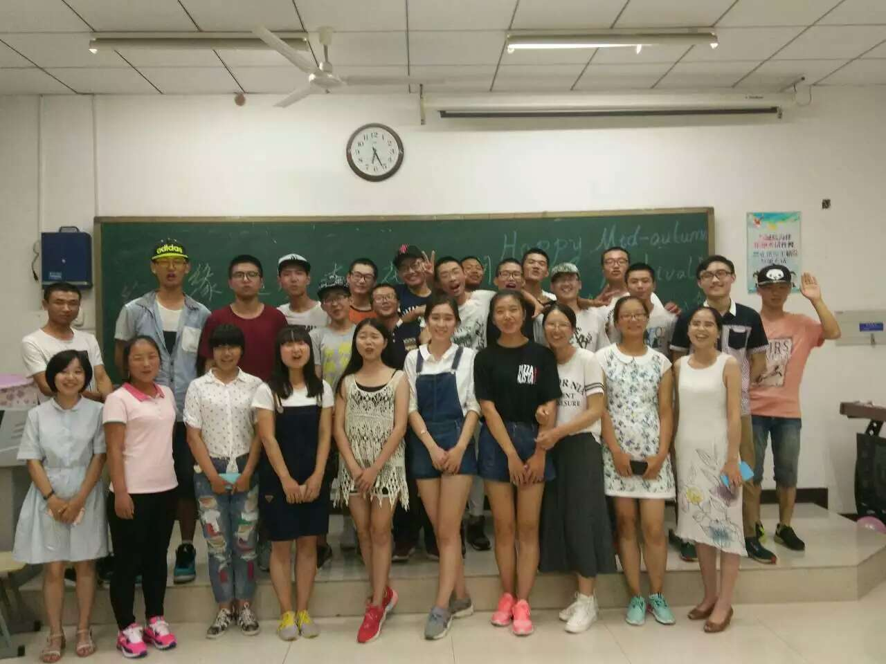</div>
					</div><div class="col-sm-4">
						<div class="feature-content">
							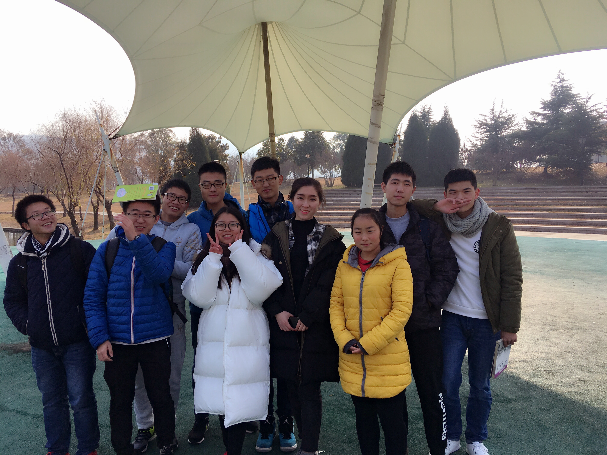</div>
					</div><div class="col-sm-4">
						<div class="feature-content">
							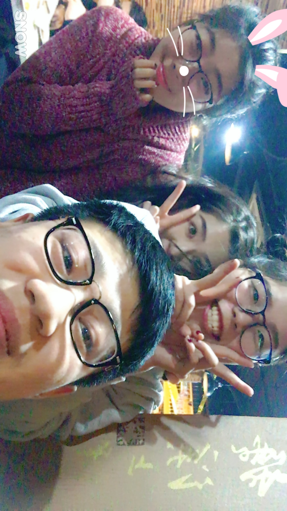</div>
					</div><div class="col-sm-4">
						<div class="feature-content">
							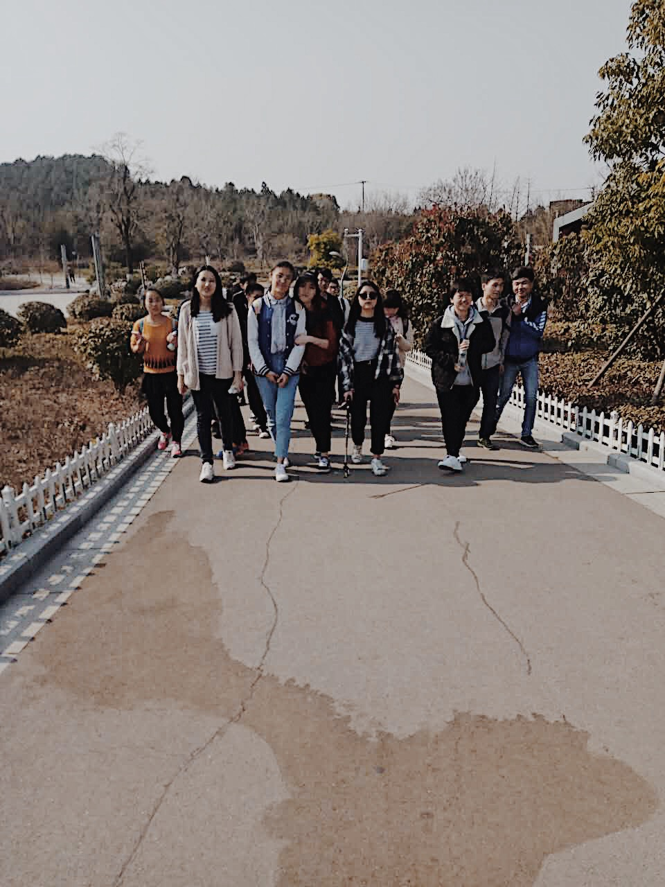</div>
					</div><div class="col-sm-4">
						<div class="feature-content">
							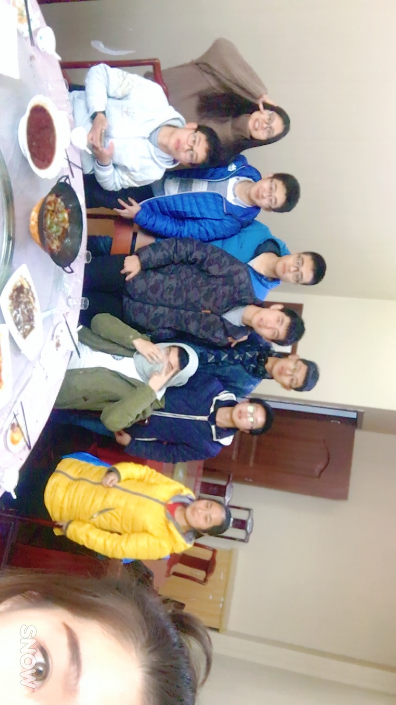</div>
					</div>
				</div>
			</div>
		
		<!-- End Feature Area -->
										
										</div>                        
									</div>                    
								</div>
							</div>
						</div>
					</section>
		<!-- End Feature Area -->
					<!-- End Testimornial Area -->
				</div>
				
					</div>

					<!-- Start Footer Area -->
					<footer id="footer-area">
						<div class="container">
							<div class="row text-center">
								<div class="col-sm-12">
									<div class="footer-content">
										<h1>欢迎来访环三主页！</h1>
										
										</div>                
									</div>
								</div>
							</div>
							<hr>
							<div class="container">
								<div class="row">
									<div class="col-sm-12 text-center">             
										<p class="copy">Copyright © forever huan3</p>
									</div>
								</div>
							</div>
						</footer>
						<!-- End Footer Area -->

						<script src="js/jquery-1.11.2.min.js"></script>
						<script src="js/jquery.scrollUp.min.js"></script> <!-- https://github.com/markgoodyear/scrollup -->
						<script src="js/jquery.singlePageNav.min.js"></script> <!-- https://github.com/ChrisWojcik/single-page-nav -->
						<script src="js/parallax.js-1.3.1/parallax.js"></script> <!-- http://pixelcog.github.io/parallax.js/ -->
						<script>
    // HTML document is loaded. DOM is ready.
    $(function() {  
    // Parallax
        $('.intro-section').parallax({
        	imageSrc: 'img/bg-1.jpg',
        	speed: 0.2
        });
        $('.services-section').parallax({
        	imageSrc: 'img/bg-2.jpg',
        	speed: 0.2
    	});
        $('.contact-section').parallax({
        	imageSrc: 'img/bg-3.jpg',
        	speed: 0.2
        });    
        // jQuery Scroll Up / Back To Top Image
        $.scrollUp({
                scrollName: 'scrollUp',      // Element ID
		        scrollDistance: 300,         // Distance from top/bottom before showing element (px)
		        scrollFrom: 'top',           // 'top' or 'bottom'
		        scrollSpeed: 1000,            // Speed back to top (ms)
		        easingType: 'linear',        // Scroll to top easing (see http://easings.net/)
		        animation: 'fade',           // Fade, slide, none
		        animationSpeed: 300,         // Animation speed (ms)		        
		        scrollText: '', // Text for element, can contain HTML		        
		        scrollImg: true            // Set true to use image		        
            });
        // ScrollUp Placement
        $( window ).on( 'scroll', function() {
            // If the height of the document less the height of the document is the same as the
            // distance the window has scrolled from the top...
            if ( $( document ).height() - $( window ).height() === $( window ).scrollTop() ) {
                // Adjust the scrollUp image so that it's a few pixels above the footer
                $('#scrollUp').css( 'bottom', '80px' );
            } else {      
                // Otherwise, leave set it to its default value.
                $('#scrollUp').css( 'bottom', '30px' );        
            }
        });
        $('.single-page-nav').singlePageNav({
        	offset: $('.single-page-nav').outerHeight(),
        	speed: 1500,
        	filter: ':not(.external)',
        	updateHash: true
        });
        $('.navbar-toggle').click(function(){
        	$('.single-page-nav').toggleClass('show');
        });
        $('.single-page-nav a').click(function(){
        	$('.single-page-nav').removeClass('show');
        });
        
    });
</script>
</body>
</html>
